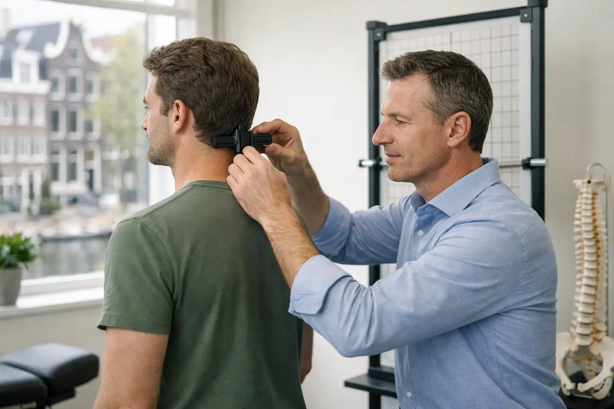
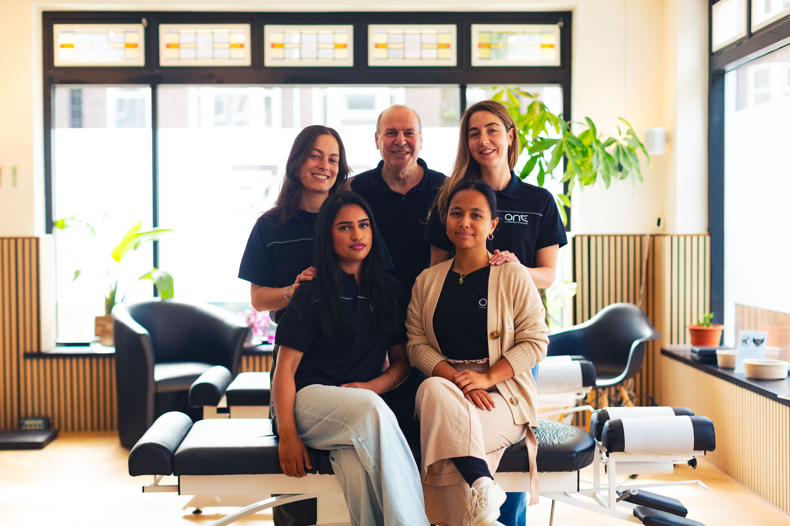

Learn to identify the different types of headaches and uncover the most common triggers.
To effectively manage headaches, it’s important to recognize that not all headaches are the same. The three most common categories are tension headaches, migraines, and cluster headaches. Tension headaches often feel like a tight band around the head, typically caused by stress or muscle tension. Migraines are usually more intense, often accompanied by sensitivity to light and sound, and sometimes nausea. Cluster headaches are less common but very severe, occurring in cycles or clusters over weeks.
Triggers vary widely from person to person, but in Amsterdam, common culprits include stress from busy work schedules, poor posture from long hours at computers or bikes, dehydration, and even inconsistent sleep patterns. For instance, many office workers develop tension headaches from sitting in the same position at their desks for hours. A typical mistake is treating all headaches the same way—using painkillers without addressing the triggers, which provides only temporary relief.
To get the best results, start by noting when, where, and how your headaches occur. Keep a simple diary to record possible triggers and patterns. Understanding your specific headache type and triggers is the first step towards lasting relief.
Which of these is a common mistake people make when dealing with headaches?
Discover how your daily habits and surroundings influence headache frequency and severity.
Living and working in Amsterdam offers an active, vibrant lifestyle, but it also introduces unique headache triggers. Many people spend hours at computers or on their phones, which can strain neck and shoulder muscles, leading to tension headaches. Cycling, while healthy, can also affect posture—especially if your bike isn’t fitted properly, causing misalignment and strain.
Urban factors like air quality, noise, and a fast-paced schedule may contribute to stress-induced headaches. Additionally, cafe culture makes it easy to miss meals or delay hydration, both of which are well-known migraine triggers. For example, skipping breakfast before an early meeting or not drinking enough water during a busy biking day may increase headache risk.
A common misconception is that daily routines in Amsterdam are automatically healthy because of cycling and walking. In reality, improper posture and skipped self-care can silently add up. Start by examining your posture at work and while cycling; make sure your workstation and bike are ergonomically set up. Keep a reusable water bottle at hand, and don’t delay meals. Small adjustments to these routines can meaningfully reduce headache frequency.
Which adjustment would most likely help someone in Amsterdam reduce headache frequency?
Gain clarity on how chiropractic care offers effective, natural headache relief.
Chiropractic care focuses on ensuring proper alignment of the spine and nervous system, which plays a crucial role in headache prevention and relief. Research shows that spinal misalignments can irritate nerves and tighten muscles in the neck and shoulders—common sources of tension and migraine headaches.
A practical example: Many Amsterdam professionals with regular headaches find substantial relief after targeted chiropractic adjustments, which release muscle tension, reduce nerve irritation and improve posture. If you spend long hours sitting at a desk or cycling with your head forward, those postural strains can accumulate over time. Chiropractic adjustments restore function, reduce pressure on the nervous system, and encourage natural healing.
One misunderstanding is that chiropractic care only helps with back pain. In reality, chiropractors are trained to address a variety of musculoskeletal and nerve-related conditions, including headaches.
If you’re struggling with recurring headaches—even after lifestyle changes—consulting a chiropractor can help identify underlying structural and nerve issues. An initial visit usually includes a thorough assessment, discussion of habits, and a personalized plan for adjustments. This approach aims to provide not just symptom relief, but also long-term improvement.
What is a common misconception about chiropractic care?
Learn how to combine self-care, lifestyle changes, and chiropractic approaches for ongoing headache management.
Now that you understand your personal headache patterns, lifestyle influences, and the benefits of chiropractic care, it’s time to build your individualized plan. Start by reviewing your headache diary: note the times, environmental triggers, habits, and severity of each headache you’ve tracked over a week or two.
Next, prioritize changes that match your lifestyle in Amsterdam. If posture at your desk or on your bike is a trigger, schedule regular stretch breaks, and consider an ergonomic assessment or adjustments to your bike setup. Keep water within easy reach, and prep healthy snacks to avoid skipping meals. Integrating even small changes helps reduce both the frequency and intensity of headaches.
A mistake people often make is trying too many changes at once or giving up before seeing results. Lasting improvement requires consistency—track your progress, adapt strategies that work best for you, and give yourself time.
Finally, if headaches persist despite your efforts, schedule a visit with One Chiropractic Studio in Amsterdam. Combining self-care with professional assessment often leads to the best results. You’ll get a tailored approach and expert support for ongoing relief.
What is a key step when creating your personalized headache management plan?
Get clear guidance on how to take control and access expert help for headache relief today.

You’ve now built a strong foundation for understanding and managing your headaches. If your headaches are frequent, disabling, or not improving with self-care, this is the sign to seek extra support. Professional guidance can help you break the cycle and prevent headaches from impacting your quality of life.
Booking an appointment with a chiropractor, like those at One Chiropractic Studio in Amsterdam, is a straightforward step. At your first session, you’ll receive a thorough health assessment, a discussion of your history and lifestyle, and an examination including posture pictures and spinal and nervous system scans. This ensures your care plan is tailored specifically to your needs and goals—no guesswork, just evidence-based guidance.
A common misconception is waiting too long, hoping headaches will resolve on their own. Early action often means faster relief and less disruption to your work and personal life.
Take the next step: Book your appointment with a chiropractic expert in Amsterdam. With personalized care, you can look forward to fewer headaches and more energy for what matters most to you.
What is the best reason to book a chiropractic appointment for headaches?
Congratulations! You're now well-equipped with practical strategies to manage your headaches and understand how chiropractic care in Amsterdam can help. Ready for relief? Book your appointment today with One Chiropractic Studio.
Use the button below to take the next step, or start over and run through the course again.

Download the information in this course to keep and refer back to